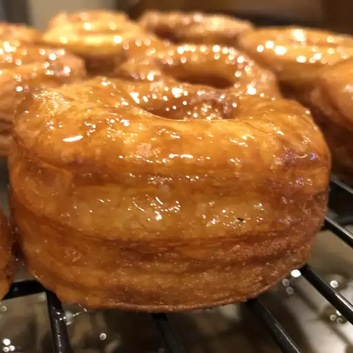

Cronut

Cronuts are the doughnuts that make people go nuts! They have the shape
and flavor of a doughnut, yet feature the crispy, flaky texture of a
buttery croissant.
Ingredients
- 1 (.25 ounce) package active dry yeast
- ½ cup warm water (105 degrees F/41 degrees C)
- ½ cup milk
- 2 ½ tablespoons white sugar, or more to taste
- 2 tablespoons butter, melted
- 1 large egg
- 1 teaspoon fine salt
- 1 teaspoon vanilla extract
- ⅛ teaspoon freshly grated nutmeg
- 1 pound all-purpose flour
-
12 tablespoons European-style (low-moisture) butter at room temperature,
divided